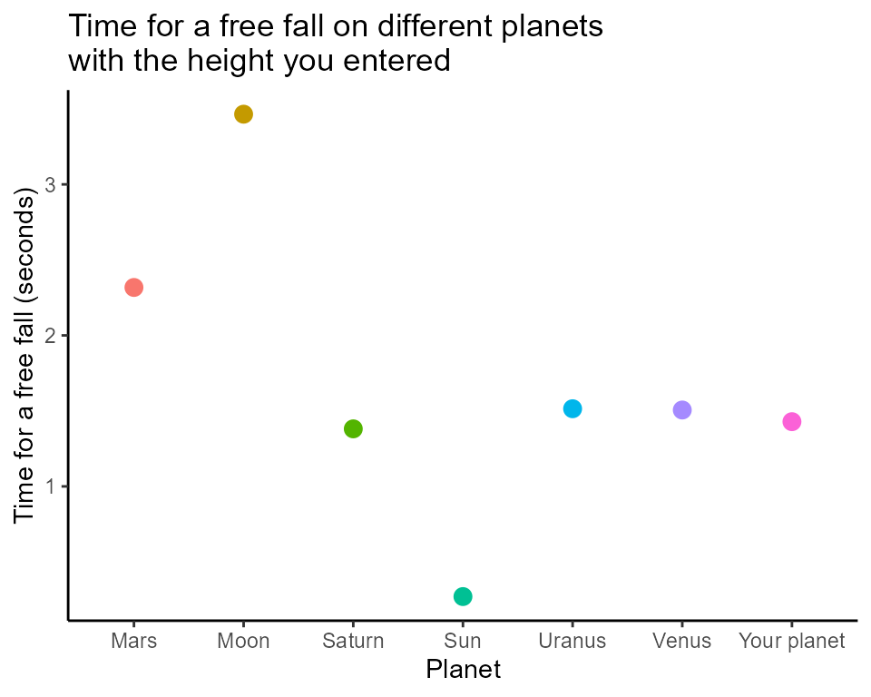

easyphysicsR
UBC_MDS_Group16
my-vignette.RmdA package with useful physics formulas to make physics easy and fun for users! It uses four functions to easily calculate four classic physics theories. By making the functions concise and supporting graphs to demonstrate the theories, physics beginners might find learning physics fun and not daunting! All functions in this package require only arguments in numeric format; no dataset files are needed. easyphysics can also generate easy-to-understand visualizations to further reveal the physics effects.
The package has four functions which can provide solutions for Physics Equations. Input will be taken from the User and the solutions will be provided by the functions. The four functions are as follows:
-
freefall()calculates the time it takes for a falling object using the equation of motion height = 1/2*gt^2, given the height and gravity of the free fall. It returns the time it takes for the free fall, and a plot compares the time of the free fall on different planets with a list. The distance traveled by the falling object (height) and the acceleration of gravity (g, default g = 9.8) are the function’s arguments. -
gravitational_energy()calculates the energy possessed or acquired by an object due to a change in its position when it is present in a gravitational field = mgh -
kinetic_energy()calculates the Kinetic Energy of an object. When work is done on an object, energy is transferred, and the object moves with a new constant speed. We call the energy that is transferred kinetic energy, and it depends on the mass and speed achieved. The kinetic energy equation is given as: KE = 1/2mv^2, Where KE is the kinetic energy, m is the body’s mass, and v is the body’s velocity. -
static_friction_ground()calculates the friction force for static object. The formula is fr = mu * N, where the mu is the coefficient of friction which incorporating the characteristics of the surface.
library(easyphysicsR)
# example usage of the freefall function
freefall(10, g = 9.8)
#> [[1]]
#> [1] 1.428571
#>
#> [[2]]
#> `geom_smooth()` using method = 'loess' and formula = 'y ~ x'
easyphysicsR::freefall(100, g = 15)
#> [[1]]
#> [1] 3.651484
#>
#> [[2]]
#> `geom_smooth()` using method = 'loess' and formula = 'y ~ x'
# example usage of the gravitational_energy function
gravitational_energy(2.5,10,9.80665)
#> [1] 245.1662
easyphysicsR::gravitational_energy(5,20,9.80665)
#> [1] 980.665
# example usage of the kinetic_energy function
kinetic_energy(0.6, 3)
#> [1] 2.7
easyphysicsR::kinetic_energy(6, 10)
#> [1] 300
# example usage of the static_friction_ground function
static_friction_ground(mu=0.2, g = 9.8, m=10)
#> [1] 19.6
easyphysicsR::static_friction_ground(mu=5, g = 15, m=10)
#> [1] 750